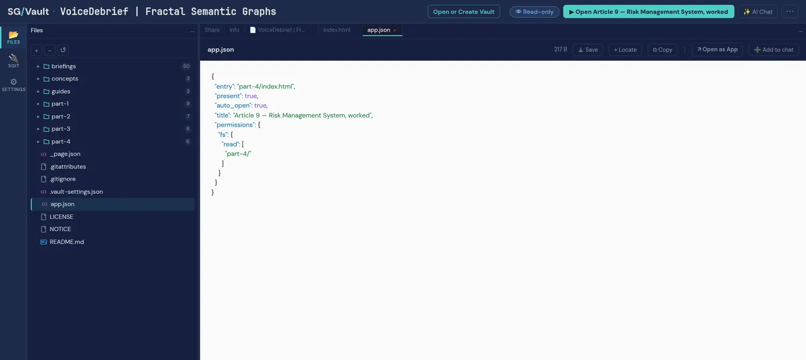
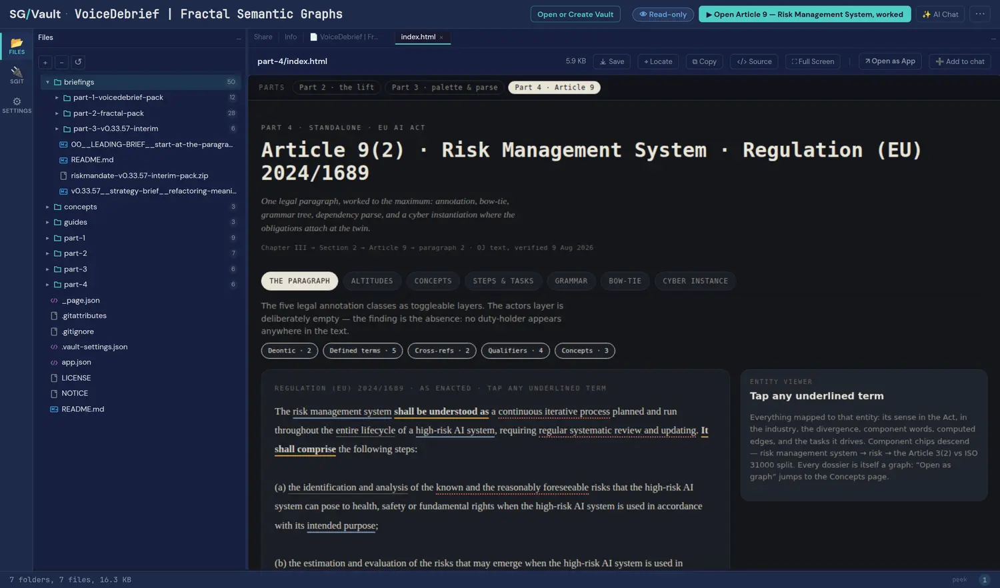
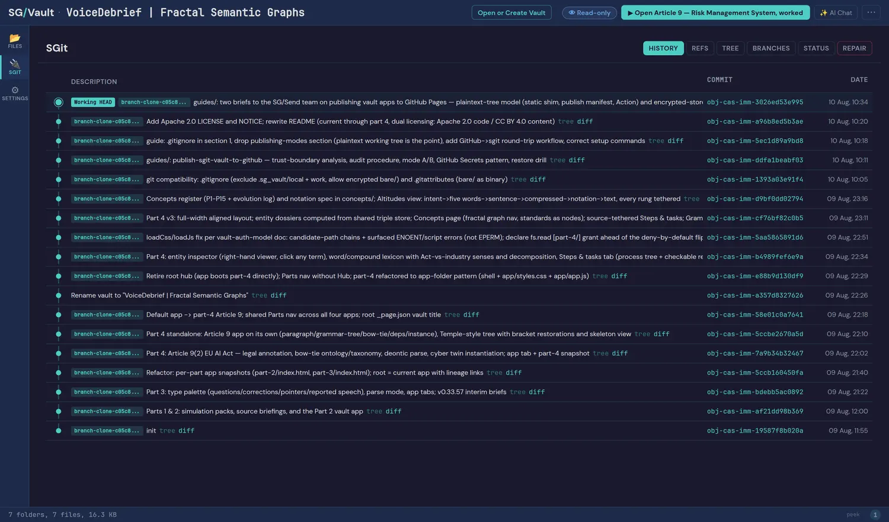

VoiceDebrief, opened
The vault's own subtitle is Fractal Semantic Graphs, which is now also this book's title, and that is not a coincidence: this is the artefact where the fractal claim stops being a claim. Four apps in one vault lift meaning out of text — from fictional voice notes to Article 9(2) of the EU AI Act — into typed semantic graphs. The idea it is built on, in the vault's own line: a paragraph is not a string, it is a graph — and so is the paragraph next to it.
The vault's own derived facts, produced by its derivation script from the read key alone: HEAD obj-cas-imm-3026ed53e995, last updated 10 August 2026, app entry part-4/index.html. Quoted here, not recounted.

The two deep readings
Two things in this vault carry further than the vault, and each has its own page.
The junction rule
An operations paragraph with no law in it, joined to Article 9(2) node-to-node through an intermediate layer — never paragraph-to-paragraph. Plus the bow-tie: taxonomy upward, ontology outward, and two hashes for one paragraph.
The empty layer, and the divergence
Five annotation layers over one provision and a sixth that is deliberately empty — with a parse that explains why no duty-holder appears. And two senses per term, where the gap between them is the output rather than an error.
Least authority, declared in 217 bytes
The whole manifest is 217 bytes and its permission block is three lines: fs.read over part-4/. No write grant, no mkdir, and no read grant over briefings/, concepts/ or the other parts — so the app cannot reach them even if it tried. The host's chrome reports the result as R3 W0: three reads granted, zero writes.
The detail worth keeping is in the history. A commit message dates the narrowing: "declare fs.read [part-4/] grant ahead of the deny-by-default flip". The grant was tightened before the platform started refusing by default, which is the direction that separates intent from compliance — and it is the kind of evidence a graph can hold and a policy document cannot.

The source travels with the work
Expand briefings/ and there are 50 files: the VoiceDebrief pack, the fractal-semantic-graphs pack, and the interim briefs. Beside them concepts/ holds a principles register (P1 to P15, each with its origin, implementation and evolution) and a notation spec; guides/ holds the operational how-tos. The vault's README draws the line explicitly: everything in part-*/, concepts/ and guides/ is produced work; everything in briefings/ is source.
That distinction is the whole difference between a demo and a record. A reader with the read key can check the output against the input that produced it without asking anyone for access to either, which is the property this book keeps asking for and rarely gets: not "here is what we built" but "here is what we built and here is what we built it from".

Lineage kept, not overwritten
part-2/ and part-3/ hold frozen app snapshots at the state they shipped in; part-4/ is current. A shared Parts navigation links all three, so the earlier thinking stays openable rather than surviving only as a commit message. This is supersede, never delete applied to applications rather than claims: the superseded version is not removed, it is marked and kept reachable.
Eighteen commits, and the reasoning is in them
The messages record the refactor to the app-folder pattern, the retirement of the root hub so part 4 could boot directly, the rename of the vault, and the licensing commit that added Apache 2.0 and CC BY 4.0. That matters more for a published vault than for a private repository: a read key hands over every commit, not just the current tree, so the history is part of what you publish. Here it reads as a record somebody would be content to have read.

Open it yourself
The key is the whole credential, and it grants read and only read. It was derived one-way from a vault key that is not published.
sgit clone sgit_rk1_31e8196d3e83b37277083c29f105b8310dbac4569e22715b5e0f85d46878eec1:k6xy9z4dOr open it in the browser from the vault's own page, which also carries the full audit note and the live embeds.
- Chapter 12 (what ships) gains a fourth published vault with derived facts, and a concrete instance of least authority: a 217-byte manifest granting read over one folder and write nowhere, narrowed ahead of the platform's deny-by-default flip.
- Chapter 5 (supersede, never delete) gains a non-claim instance: frozen app snapshots kept openable rather than replaced.
- Chapter 13 (origins) gains the point about published history: a read key hands over every commit, so the commit log becomes part of the published artefact.
- The lineage chapter gains the vault's own framing of source versus produced work, which is the same distinction the brief pack draws on this site.
For an agent
Source of record: sgit.ai/demos/vaults/voice-debrief/, read with the published read key above. The figures on this page are that vault's own published screenshots, re-published under CC BY 4.0. Two cautions when citing: parts 1 to 3 run on an explicitly fictional corpus, and the numbers here are the vault's derived facts rather than counts made by this site. The deeper readings are the junction rule and the empty layer.